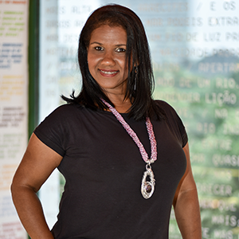

-
 Flavio MedeirosMaestro e Diretor
Flavio MedeirosMaestro e DiretorBLA BLA BLA BLA BLA BLA BLA
-
 Adriana CarlaMezzo-soprano
Adriana CarlaMezzo-sopranoNatural de Recife, Pernambuco. Estudou Flauta transversal no Centro Profissionalizante de Criatividade Musical do Recife e no Conservatório Pernambucano de Música, com os professores Rogério Acioli e George Albert. É formada em Bacharel em Música Sacra pelo Seminário Batista do Norte do Brasil. Fez parte do grupo de performance corporal TAMBACAC e do Côro OPUS2 , sob orientação dos professores Maria Aida Barroso e Flávio Medeiros, respectivamente. Como flautista, participa dos grupos Dell’Armonia Antiqüa e Sonoro Ofício, grupos de música antiga, dirigidos por Gaston Gerônimo (Uruguai) e Sérgio Dias, respectivamente. Teve aulas com Rosângela Lima, Ricardo Kanji e Lawrence Pottier. Como cantora, participa do grupo Contracantos, sob orientação do professor Flávio Medeiros, e do Ópera Stúdio UFPE, sob direção de Adriano Pinheiro. Apresentou-se no festival de Ópera de Oaxaca/México em 2015, e participou da turnê nacional 2014 do musical O nosso Villa, da companhia Ária Social. É pós-graduada em Musicoterapia pela FACHO, sob orientação de Carmem Vasconcelos. Atualmente é aluna do curso de licenciatura em música pela UFPE.
-
 Eudes NaziazenoTenor
Eudes NaziazenoTenorCom sua entrada no Coro Universitário da UFPE em 2001, iniciou suas atividades cantando a Missa Nordestina, do maestro Clóvis Pereira, sob regência do Prof. Flávio Medeiros. Durante sua visita aos Estados Unidos (EUA) pelo ano letivo Fall2009/Spring2010, participou da University Chorus da University of California at Berkeley (EUA), sob regência da Prof.a Marika Kuzma, participou e prestou assistência como solista auxiliar do San Francisco Chorus Society. Em 2011, participou do Festival de Inverno de Garanhuns com o ensamble vocal In'Operanti. Em 2012, fez o papel do Monostatos em montagem da ópera Die Zauberflöte (W.A. Mozart), fez o papel do Don Pedro em montagem da ópera Pepita Jimenez (Isaac Albeniz), e participou da montagem em cortina lírica da ópera Le Martyre de Saint Sébastien (Claude Debussy), este último com o Coro Opus 2. Em 2013, fez o papel de Marco Donati da ópera Gianni Schicchi, pelo programa Ópera Studio da UFPE, e em 2015 fez o papel do Trítão da ópera O Pescador e Sua Alma (Marcos Lucas). Ao longo de sua trajetória, teve aulas de canto com Fábia Sobral (UFPE), Marika Kuzma (UC/Berkeley), Deborah Benedicts (Assistent Professor UC/Berkeley), e Virgínia Cavalcanti (UFPE/UFRN). Atualmente, é aluno de Luiz Kleber de Queiroz.
-

Fabia SobralSoprano
UAHSUSAIANI COJANOJCJO J IBDIBIADIAHDIABDHBA HDB HAB HJABDHABDHABHBADB
-
 Guilherme JacobsenBaritono
Guilherme JacobsenBaritonoFormado em Violão Popular pelo Conservatório Pernambucano de Música e Licenciando em Música pela UFPE, atua na area de canto desde 2012. Participou de diversas apresentações do Coro Universitário da UFPE. Faz parte do coro Opus2 desde 2012 e do OperaStudio da UFPE desde 2013, onde também trabalhou como assistente de produção. Estreou como solista em 2013 no papel de Betto di Signa na ópera Gianni Schicchi de Giacomo Puccini.
-
Jadiel GomesTenor
Iniciou-se como cantor em diversos corais de igrejas do Recife. Fez o Curso de Teoria, Solfejo e Tuba pelo Centro Profissionalizante Musical do Recife. Participou como tenor e solista do Madrigal da UNICAP (Recife) onde estudou canto com o professor Lindemberg Pires. Fez master class com o barítono Martin Krasnenko. Foi finalista do Concurso Internacional de Canto Bidu Sayão. Tem se apresentado regularmente como solista da Orquestra Sinfônica do Recife sob a regência do maestro Osman Gioia. É regente da Banda do Ginásio Pernambucano e apresenta-se como tubista, em diversas orquestras de frevo do Recife e Olinda. Realizou turnês pela Europa e Estados Unidos sob a regência do prof Flávio Medeiros, neste Coro Contracantos. Atuou como regente do Coro Nossa Música, e atualmente rege os coros Canto livre da AABB e Canto no Ar - INFRAERO Foi solista de diversas obras para coro e orquestra, entre elas, a Fantasia Coral de Beethoven, Réquiem de Fauré, Cantata Natalina de Clóvis Pereira , entre outras.
-
Mariane MarizMezzo-Soprano
Iniciou seus estudos musicais no coro juvenil do Colégio Marista São Luis e em aulas de teoria musical na escola Musicale. Participou do Coro Universitário da UFPE de 2008 a 2011 se apresentando sob a regência de Flávio Medeiros em peças como Carmina Burana de Carl Orff, Réquiem de Mozart, Glória de John Rutter e outras. Desde 2010 faz parte do coro Opus 2 do Departamento de Música da UFPE, também regido por Flávio Medeiros, tendo apresentado como corista o Magnificat de Bach, a Grande Missa Nordestina de Clóvis Pereira, o Martírio de São Sebastião de Debussy, Liebeslieder Waltzer de Brahms e outras peças. Participou do IX e X Encontro de Música Antiga de Recife / Olinda e da II e IV Mostra de Interpretação em Instrumentos Históricos, tendo Master Classes de canto e prática de conjunto com diversos professores nacionais e internacionais. Participou como solista de diversas montagens de óperas profissionais e estudantis: A Flauta Mágica de Mozart (como a segunda dama) em 2012, Gianni Schicchi de Puccini (como Lauretta), A Médium de Menotti (como Sra. Gobineau), Les Plaisirs de Versailles de Charpentier (como a Música) e O Pescador e Sua Alma de Marcos Lucas (como a sereia). Estuda canto lírico em aulas particulares desde 2010 com Virgínia Cavalcanti.
-
 Osvaldo PachecoBaixo
Osvaldo PachecoBaixoé natural de Recife, barítono, licenciado em Música pela Universidade Federal de Pernambuco. Iniciou seus estudos em música no Seminário Teológico do Norte do Brasil (STBNB) em 2005 tendo aulas de iniciação ao canto com a professora Lenilda Silva. Integrando o Coro Universitário da UFPE e o coro Opus 2 participou de diversas apresentações e entre elas sua presença marcante como solista na obra Te Deum de A. Dvorak, e no Oratório de Noel de Camile Saint-Saens, ambos realizados em 2013 na Igreja da Madre de Deus em Recife; destaca-se também sua atuação nesses grupos como corista na abertura do XXVI Encontro Nacional do Forum Brasileiro de Pró-Reitores de Graduação – Forgrad UFPE realizado em 2013 no Mar Hotel, no recital Brahms & Liszt, e recital Kyrie realizados em 2014. Estudou canto com o professor Luiz Kleber Queiroz (UFPE). Desenvolve atividades como regente de coro na IV Igreja Batista do Centenário, e na I Igreja Batista Missionária, ambas no bairro do Curado 1,em Jaboatão dos Guararapes/PE
-
 Surama RamosMezzo-Soprano
Surama RamosMezzo-SopranoA jovem pernambucana, mezzo-soprano, transita entre canto erudito e canto popular. Cursa Licenciatura em Música pela UFPE, é aluna de canto erudito do prof Adriano Pinheiro e nessa instituição participa dos grupos vocais Coro Universitário, Opus 2 e Contracantos, sob a regência do maestro Flávio Medeiros. Sendo corista participou de obras como a Missa Nordestina de Clovis Pereira, a Nona Sinfonia de Beethoven, o Magnificat de J. S. Bach, Carmina Burana de Carl Orff, Le Matyre de San Sebastian de C. A. Debussy, Pepita Jiménez de I. Albéniz, Carmen de Bizet, Les Plaisirs de Versailles de A. Charpentier. Interpretou a Terceira Dama na ópera A Flauta Mágica de W. A. Mozart; a Madame Flora na Ópera A Médium de G. C. Menotti; e a Alma na Ópera O Pescador e Sua Alma. Desde 2011 integra a trupe do Espetáculo Baile do Menino Deus, criação de Ronaldo Correia de Brito. Exerce função de Backing Vocal com enfoque para gravação de CDs, lançamento de EP e shows, a exemplo destes: Carlos Sandroni (CD - Sem Regresso). Em 2015 tornou-se integrante do grupo Voz Nagô, que junto ao percussionista Naná Vasconcelos fazem o show de abertura do Carnaval de Recife. Atualmente ministra aulas de Técnica Vocal e Iniciação Musical em Recife-PE.
-
 Matheus SoaresTenor
Matheus SoaresTenoré natural de Recife-Pernambuco e comecou a sua trajetoria como cantor numa igreja desta cidade, onde teve aulas de canto, piano e participou de diversos grupos vocais e coros, atuando como solista em musicais e cantatas. Participa dos coros Universitario da UFPE, Opus2 e Contracantos, regidos pelo Professor Flavio Medeiros, nos quais cantou pecas como “A Nona Sinfonia” e “Missa Solemnis” de Beethoven, “Te Deum” de Dvojak, a Missa Nordestina de Clovis Pereira, “Oratorio de Noel” de Camille Saint Saens e “Gloria” de Vivaldi. Em 2012 iniciou seus estudos de canto Erudito com a professora Tarcyla Perboire e atualmente é aluno do professor Adriano Pinheiro. Como solista, interpretou o papel de "J. Barbosa" na Opereta “A Noiva do Condutor” de Noel Rosa, apresentada pelo Opera Studio da UFPE. Em 2014, Matheus estudou com a soprano Michelle Foster no Royal Conservatoire of Scotland e neste mesmo ano teve aulas em Napoles (Italia), Londres (Inglaterra) e Viena (Austria). Participou dos coros City of Glasgow Classical Choir, University of Glasgow Choir e atuou como solista no Choir Society da Glasgow Caledonian University.
-
Tarcyla PerboireSoprano
é Soprano, bacharela em Canto Lírico pela Universidade Federal de Pernambuco, sob a orientação de Márcia Rangel. Também estudou com Adalgisa Marques, Geni Katz, Virgínia Cavalcanti e Adriano Pinheiro. Integra os coros Contracantos e Opus2, ambos sob a regência de Flávio Medeiros, contando com participação nas obras Messiah de G. F. Haendel, o Requiem de W. A. Mozart, a cantata Carmina Burana de Carl Orff, A Grande Missa Nordestina do compositor e maestro pernambucano Clóvis Pereira, Nona Sinfonia de L. van Beethoven, com a Orquestra Sinfônica de Recife e sob a regência do maestro Marlos Nobre. Atuou como solista na obra Magnificat em Ré Maior de J. S. Bach, sob a regência de José Renato Accioly e da Grande Missa Armorial de Capiba. Ainda como solista, interpretou “Lola” em Cavalleria Rusticana de P. Mascagni, "Frasquita" em Carmen de G. Bizet, a "1ª Dama" em Die Zauberflöte de W. A. Mozart, “Lauretta” em Gianni Schichi de G. Puccini, “Lucy” em O Telefone de G. Menotti e, sob a regência de Marcelo Fagerlande, "Belinda" em Dido and Aeneas de H. Purcell, “Sereia” em O Pescador e Sua Alma de Marcos Lucas; e como corista, nas óperas O Cientista de Sílvio Barbato e Pepita Jiménez de I. Albéniz.
-
 Virginia CavalcantiMezzo-Soprano
Virginia CavalcantiMezzo-SopranoVIRGÍNIA CAVALCANTI tem formação em piano e iniciou seus estudos de canto com o tenor Lindbergh Pires. Participou de diversos masterclasses e estudou na Escola Superior de Música de Köln (Alemanha) sob orientação do barítono Martin Krasnenko. Venceu os prêmios Canção e Júri Popular do V Concurso Internacional de Canto Bidu Sayão (Belém/PA). Apresentou-se como solista em diversos concertos e óperas sob regência de nomes como Osman Gioia, Boyko Stoianov, José Renato Accioly, Sérgio Dias, Marcelo Fagerlande e Santiago Meza. Entre as diversas personagens que já interpretou destacam-se Carmen [Carmen], Yuru [Pahy-Tuna] em sua estreia mundial, Dido [Dido and Aeneas], Antoñona [Pepita Jimenez] e Alma [O Pescador e sua Alma]. Foi professora substituta de Técnica Vocal e Canto Coral no curso de Licenciatura em Música da UFPE e é Bacharelanda em Canto na mesma instituição, sob orientação do barítono Luiz Kleber Queiroz. É mestra em Práticas Interpretativas dos séc. XX e XXI pelo Programa de Pós-graduação em Música da UFRN. Integra o grupo vocal Contracantos desde sua fundação e com ele excursionou pela Europa e Estados Unidos.
-
 Isaac PedroTenor
Isaac PedroTenoré natural de Recife, graduado pela UFPE nos cursos de Licenciatura em Música e Bacharelado em Canto, sob a orientação da profª Márcia Rangel. Participou de Máster Classe de canto com Ilem Vargas (RJ), Pedro Couri (MG), Adélia Issa (SP), Antonio Salgado (Portugal) e Karine Serafim (França). Foi orientador nas oficinas de canto à convite da UEBA na cidade de Paulo Afonso. Apresentou-se como solista em diversos concertos junto à Orquestra Sinfônica do Recife, na Sinfonia nº 09 de Beethoven, no Oratório Messias de Handel, Enéas na ópera Dido e Enéas de Henry Purcell,no Réquiem e Don Otávio na ópera Don Giovanni de Mozart. Foi solista da Missa de Puccini no Projeto Salão Nobre do Teatro de Santa Isabel em agosto de 2007. Sob a regência de Flávio Medeiros, foi solista da “Missa de Glória” de Puccini, da cantata profana de Carmina Burana de Carl Orff. Participou do 19º festival Internacional de Música Antiga e Colonial Brasileira (Juiz de Fora/MG) sendo solista no seu encerramento com o Réquiem do Pe. José Maurício Nunes Garcia, sob a regência de Sérgio Dias. Realizou uma turnê na França na cidade de Grenoble e Paris em maio de 2003 e nos Estados Unidos da América em 2006, junto com o grupo Contracantos da UFPE. Foi professor de música do Seminário de Educação Cristã – SEC. Como professor substituto de música na UFPE, lecionou nas áreas de Canto, Canto Coral, Técnica Vocal, Regência de Coro, além de solista do Coro de Câmara Barroca da mesma instituição. Atualmente é professor de música na Escola Técnica Estadual de Criatividade Musical nas áreas de Classe de Canto, Canto Coral, Fisiologia da Voz, Fonética, Solfejo, Instrumento Auxiliar e Iniciação ao Piano, atuando também como Correpetidor.
-
 Tarciana DamiãoSoprano
Tarciana DamiãoSopranoSoprano Lírico, técnica em canto pelo Conervatório Pernambucano de Música e Bacharel em canto pela universidade Federal de Pernambuco. É natural de Recife e iniciou seus estudos de canto em 2003. Participou de master class com os professores: Inês Stockler(SP), Marcelo Okay e David Junker (DF), no Festival Eleazar de Carvalho. Inácio de Nonno (RJ), Adriana Clis (RJ), Geneviene Deprès (Canadá), Marília Vargas (PR), Rodrigo del Poso (Chile), Karine Seraphim ( França), Anik St. Louis, (Canadá), Carlo Colombara ( Itália). Participou do I,II, III e IV Ópera Studio Recife com ( I em 2012 - Frieda Gebert (EUA) e Marcelo Ferreira (SP), (II em 2013 - Tatiana Aguiar, Marcello Cormio (Itália), Victor Philomeno e Marcelo Ferreira), (III em 2014 - Marcio Rodrigues, Jeremy Reger (EUA) Victor Philomeno(SP) e Marcelo Ferreira) e (IV, em 2015 - Frieda Gebert, Marcelo Ferreira e Vitor Philomeno). Em 2009 participou da primeira récita mundial da ópera “ Dulcineia e Trancoso” de Eli-Eli Moura. Foi membro do Coro universitário (UFPE) de 2009 a 2012, regência de Flávio Tenório, onde já atuou como solista em “Uma Noite na Ópera” e do “Concerto Sacro”, do Ópera Studio (UFPE) em 2013 e do Coro Opus 2 (UFPE) em 2014. Enquanto aluna de canto, atuante no Centro de Artes e Comunicação (CAC), criou o projeto saindo do canto no CAC (2013), cuja finalidade era a promoção de um espaço para performance do alunos de canto, instrumentos e das diversas artes do centro. Em Agosto de 2014 foi convidada especial no II Falame ( Festival Alagoano de Música Erudita) e em Novembro do mesmo ano gravou a ária “O mio Babbino caro” da ópera Gianni Schicchi de G. Puccini para um comercial da Rede Globo Nordeste em homenagem ao artista plástico Francisco Brennand. Atualmente é integrante do coro Contracantos da UFPE e atua como professora de canto particular.
-
Lucia Helena CysneirosMezzo-soprano
é natural de Garanhuns/PE, graduada em Licenciatura em Educação Artística (1976) e Licenciatura em Música (2007) pela Universidade Federal de Pernambuco UFPE). É mestra em Etnomusicologia (2012) pela UFPB. Em 2015 concluiu o primeiro módulo do The San Francisco International Orff Course, na Califórnia/EUA. Em 2006 recebeu a I Comenda Josefina Aguiar como aluna destaque do Departamento de Música da UFPE; e IV lugar na Jornada FACEPE de Iniciação Científica como bolsista PIBIC na área de Etnomusicologia, sob a orientação do prof. Dr. Carlos Sandroni. Sob a regência do maestro Flávio Medeiros integra os grupos vocais da UFPE Opus 2, Coro Universitário e Contracantos. Atuou como corista em diversos recitais e na ópera “O pescador e sua alma” realizada em 2015. Ainda sob essa regência integra o Txaimus - grupo de chimes e sinos da UFPE, onde atua como instrumentista e arranjadora, computando entre seus trabalhos o frevo Último Regresso (Getúlio Cavalcanti), O trenzinho do caipira e Bachianas nr 4 e 5 (Heitor Villa-Lobos); ainda como arranjadora desenvolveu trabalhos para o grupo Flauta de Bloco da UFPE. Do repertório do grupo vocal Contracantos é responsável pelo arranjo instrumental da Suite Afro-nordestina, e arranjo vocal e instrumental do coco Rosa. Ainda nesse espaço é apresentada uma ciranda de sua autoria – Dançando com Lia, para coro e clarinete. Em 2012 foi membro do Grupo Temático de Música do Funcultura.
-
 Sue RamosSoprano
Sue RamosSopranoAtriz e cantora Pernambucana é estudante de canto erudito pelo Conservatório Pernambucano de Música. Como atriz, participou da ópera A flauta mágica em (2012), Obsessão em 4 atos (2013), Cordel do Amor sem fim e O rei leão (2015) Foi premiada como melhor atriz na modalidade escola de teatro pelo FETEAG- 2014( Festival de Teatro do Agreste. É componente do coro Opus 2 e recentemente o coro Contracantos ambos regidos por FLavio Medeiros. Desde 2013 compõe a trupe do Baile do menino Deus de Ronaldo Correia de Brito. É integrante do grupo Voz Nagô que participa da abertura do Carnaval do Recife desde 2013 com o percussionista Naná Vasconcelos. É graduada em letras pela FAINTVISA e especialista em Cultura Pernambucana pela FAFIRE.
-
Luiz Kleber QueirozBaritono
O barítono carioca Luiz Kleber Queiroz é professor de canto do Departamento de Música da Universidade Federal de Pernambuco, tendo concluído Mestrado em Música/Canto pela UFPB, onde também atuou como professor temporário, em 2013. Graduou-se em Música/Canto pela UFRJ, e cursou a formação profissional de atores da Casa das Artes de Laranjeiras (CAL/RJ). Estudou canto com os professores Victor Prochet, Cilene Fadigas e Inácio de Nonno. Como cantor solista, já atuou em inúmeros concertos e óperas como: Gianni Schicchi, Don Giovanni, Cavalleria Rusticana, Don Pasquale, La Cenerentola, O Elixir do Amor, As Bodas de Fígaro, Petit Messe Solennelle , La Bohème, A Ópera dos Três Vinténs, L’Orfeo, Vespro della Beata Vergine, A Flauta Mágica, L’Enfant Prodigue, I Capuleti e I Montecchi, Don Quichotte chez la Duchesse, La Purpura de La Rosa, A Comédia na Ponte, Oratório de Natal, Rei Arthur, Les Amants Trahis, Peabiru, Um Requien Nordestino, Paixão Segundo Alcaçus, entre outros. Integrou, por 15 anos, o Coro do Teatro Municipal do Rio de Janeiro e atuou nos grupos de música antiga Bene+Dictus e Daedalus. Integra o Quarteto Colonial, grupo vocal com o qual já se apresentou em todos os estados do país, e no exterior, no Chile, na Bolívia e em Portugal. Como ator, recebeu o prêmio de melhor ator coadjuvante no XVIII Festival Nacional de Teatro de São José do Rio Preto/SP, pela peça O Menino Detrás das Nuvens, de Carlos Augusto Nazareth.
-
Maria Aida BarrosoSoprano
é mestre em Música – Cravo e graduada em Regência pela Escola de Música da UFRJ. Atualmente é Professora de Percepção Musical no Departamento de Música da UFPE, onde é coordenadora da OEF – Orquestra Experimental de Frevo da UFPE, do grupo TAMBACAC, que realiza pesquisa e performance tendo o corpo como produtor de som e movimento e do LEMEI – Laboratório de Educação Musical Especial e Inclusiva. Dirigiu o Quarteto Colonial, grupo vocal especializado em obras a cappella, com o qual realizou as turnês “O Sacro e o Profano na Música Brasileira do Séc. XIX”, por dez cidades do Centro-Oeste e Norte do país (jan-2005); “Cantos Brasileiros”, por quatro cidades do Nordeste (set-2006) e “Brasil a Quatro Vozes”, por cinco cidades do Nordeste (set-2010). Apresenta-se como cravista e regente, destacando-se a montagem de “O Pescador e sua Alma”, de Marcos Lucas e Leonardo Miranda, com libreto baseado no conto homônimo de Oscar Wilde, realizada no Teatro de Santa Isabel (2015). Dentre seus trabalhos, destacam-se ainda: Direção Musical e Regência de LA PURPURA DE LA ROSA, de Tomás de Torrejón y Velasco – primeira ópera composta na América Latina; Assistência de Direção Musical da Ópera REI ARTHUR de H. Purcell na Sala Cecília Meirelles, Rio de Janeiro; da Ópera L’OFEO de C. Monteverdi no Theatro Municipal do Rio de Janeiro; da Ópera VIVA LA MAMMA de G. Donizetti; da Fábula Musical O ÚLTIMO DIA sobre a vida do Padre José Maurício Nunes Garcia; da Ópera Barroca DON QUICHOTTE CHEZ LA DUCHESSE de J. Bodin de Boismortier, todas no CCBB – RJ.
-
Carlos SilvaClarinetista
Especialista em Metodologia do Ensino da Música e Bacharel em clarineta pela Universidade Federal de Pernambuco, continua a se aperfeiçoar em seu instrumento, através do estudo da performance e de sua participação frequente em seminários, congressos e festivais de música. Como músico, iniciou sua carreira na Orquestra dos Meninos de São Caetano, na década de 90, sob a regência do Maestro Mozart Vieira de São Caetano – PE e atuou como clarinetista, durante 12 anos, na Banda Sinfônica do Recife, sob a regência do Maestro Nenéu Liberalquino. Participou do Quarteto Dobrando a Madeira e Octeto Brasilis, dos quais foi responsável por sua idealização e composição. Atualmente, é participante e responsável pelo Grupo CONTRAVENTOS, resultado de sua parceria com o regente Flávio Medeiros do grupo Contracantos. Como professor, atuou na Escola Técnica Estadual de Criatividade Musical do Recife e na Fundação Música e Vida de São Caetano por mais de dez anos, formando alunos para estudarem na universidade e atuarem em bandas e orquestras profissionais civis e militares. Desde 2013, atua como Professor do curso de Licenciatura em Música, com ênfase em música popular, no IFPE – INSTITUTO FEDERAL DE PERNAMBUCO, onde está desenvolvendo pesquisa sobre a metodologia de ensino do instrumento clarineta.
-
Ecenilson DiasFlautista transversal
BLABLABLA.
-
Edileusa TavaresClaronista e Saxofonista
Especialista em Metodologia do Ensino da Música e Bacharel em saxofone pela Universidade Federal da Paraíba, continua a se aperfeiçoar em seu instrumento, através do estudo da performance e de sua participação frequente em seminários, congressos e festivais de música. Como musicista, iniciou sua carreira na Orquestra dos Meninos de São Caetano, na década de 90, sob a regência do Maestro Mozart Vieira de São Caetano – PE e atuou como saxofonista, durante mais de dez anos, na Banda Sinfônica do Agreste. Participou do Quarteto Dobrando a Madeira e Octeto Brasilis. Atualmente, é participante do Grupo CONTRAVENTOS, resultado de sua parceria com o regente Flávio Medeiros do grupo Contracantos. Como professora, atuou na Fundação Música e Vida de São Caetano por mais de dez anos, formando alunos para estudarem na universidade e atuarem em bandas e orquestras profissionais civis e militares. Desde 2008, atua como Professora na Escola Técnica Estadual de Criatividade Musical do Recife do curso de Técnico em Música, com ênfase em saxofone.
-
Edson SilvaTrompista
Iniciou seus estudos de música na Banda Sinfônica de São Caetano, (no projeto Orquestra dos Meninos) idealizado pelo Maestro Mozart Vieira, onde atuou como trompista e também como professor de trompa na Fundação música e Vida de São Caetano–PE. Estudou trompa com Cisneiro Andrade na UFPB, e atuou como trompista do Octeto Brasiles e da Camerata UFPE. Foi professor de música de câmara no curso de Expressões Artísticas da Fundação de Cultura e Turismo de Caruaru-PE no período de setembro de 2003 a setembro de 2004 onde trabalhou com os instrumentos: trombone, trompete e tuba. Participou da gravação de dois CD’S da banda de São Caetano e apresentou-se nos principais teatros do país, tais como, teatro municipal de São Paulo, Rio de Janeiro, Brasília e Salvador, além de turnês na França, Bélgica e Alemanha. Chegando a tocar para mais de 100 chefes de estado no cinquentenário da UNESCO. Atualmente trabalha como professor de música do SESC Caruaru com aulas Pífano e percussão, violão e canto coral, é regente do Coral Vida Nova na igreja da FAFICA na Cidade de Caruaru-PE e desenvolve um trabalho de pesquisa com a musicalidade brasileira junto ao grupo contraventos, no qual atua também como trompista.
-
John MelloPercussionista
Iniciou seus estudos de música na Banda Comercial de Caruaru-PE com o maestro Normando, estudou Bateria na NOVA MUSIC com o Prof. Jeremias e participou de diversas bandas como baterista na cidade de Caruaru-PE, atualmente toca com a banda LA CAMBADA, a mesma já tem dois CDs gravados. Desenvolve um trabalho de pesquisa com a musicalidade brasileira junto ao grupo Contraventos no qual também atua como percussionista. Também participa do grupo Suíte de Barro do SESC Caruaru-PE tocando bateria percussão e pífano onde participou em junho de 2014 do lançamento do CD Suite de Barro.
Integrantes
Conheca os integrantes do nosso grupo